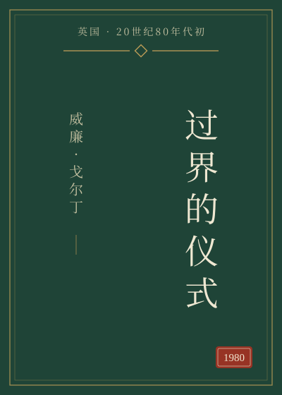
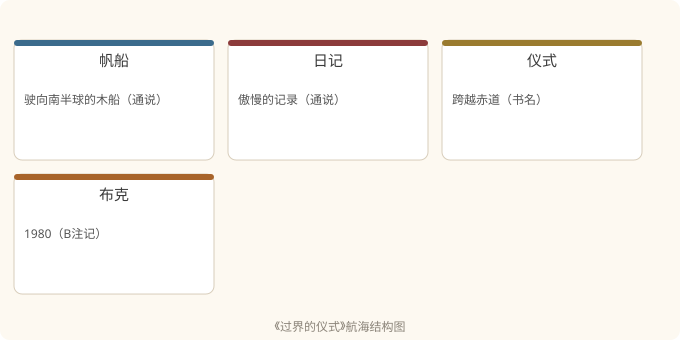

过界的仪式
一、基本信息
| 作者 | 戈尔丁 |
|---|---|
| 成书/出版 | 1980年（作者页注记：Britannica——过界的仪式（1980布克奖）——Sea trilogy） William Golding — Encyclopaedia Britannica（百科全书） |
| 国别/地区 | 英国 |
| 时代 | 现当代 · 20世纪80年代初 |
| 体裁 | 长篇小说 |
| 语言 | 英语 |

《过界的仪式》航海结构图（主题·结构图）
二、创作背景
作者页注记：过界的仪式——'（1980布克奖）——Sea trilogy（Britannica）'。
Britannica：戈尔丁——《蝇王》作者、1983诺奖（作者页交叉——待核）。
题材（通说待核）：1812年驶往澳大利亚的船——日记体的海上'仪式'。
三、内容脉络
（通说待核）塔尔伯特的日记：绅士的傲慢与海上惩罚。
（通说待核）'过界'：跨越赤道仪式与阶级的深渊。
四、主要人物表
| 人物 | 身份 | 说明 |
|---|---|---|
| 塔尔伯特 | 贵族青年/日记者 | （通说待核） |
五、主题与艺术特点
- 航海日记的文体（通说待核）。
- 阶级与'文明'的假面（通说待核）。
- 海洋三部曲之首（B注记：Sea trilogy）。
六、影响与评论
- Britannica：1980布克奖（作者页注记）。
William Golding — Encyclopaedia Britannica（百科全书） - Britannica：1983诺奖（作者页交叉——待核）。
William Golding — Encyclopaedia Britannica（百科全书）
七、阅读建议
难点
- 19世纪航海史。
- 日记体的不可靠。
- 《过界的仪式》中译名（《航祭》）待核。
- 英文原版。
戈尔丁中期；与《蝇王》对读。
八、待核实
- 塔尔伯特人名核对（通说）。
- 1980年出版（Faber说）待核。
- '海洋三部曲'卷次核对。
本页主要来源
相关作品：蝇王10 1/2章世界史农民